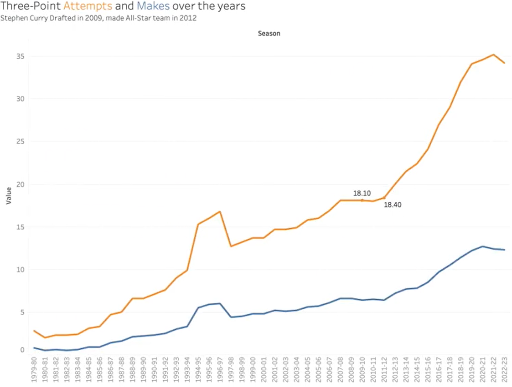

Three point shooting used to be more of a side dish than the main course. Teams ran their offense to get something at the rim or a clean midrange look, and the three was there if a shooter happened to be open. That started to shift as analytics took hold, but it really exploded once Steph Curry and other perimeter players started taking and making threes at a volume nobody had seen before. After that, the league followed. Attempts from deep went way up, and the three point line became the center of everything.
Three-point attempts and makes over the years
1979–80 → 2022–23
That change reshaped how defenses have to play. You cannot just sit in the paint and protect the rim when half the lineup is spotting up outside. Bigs get pulled away from the basket, help defense has farther to travel, and one mistake can turn into three free points instead of two. Offenses now spread the floor with four or five shooters, and spacing is treated almost like another star player on the court.
What the spacing was supposed to do
In theory, that should make the game cleaner. If defenders are stretched out, there should be more cutting, more backdoor layups, and more easy buckets created by simple ball movement. The three point shot should be a threat that opens up better shots everywhere else. When a defense has to respect the arc, driving lanes are wider and kick outs are more dangerous.
What actually happens
In practice, a lot of teams skip straight to the three and never really run anything. Instead of using spacing to create high quality looks, possessions often turn into one screen, one pass, and a quick pull up from way behind the line. The basic math that says a good three is worth more than a long two somehow turned into the idea that any half decent three is fine, even if there was a wide open slip to the rim or a simple extra pass available.
The math that says a good three beats a long two somehow turned into the idea that any half decent three is fine.
You can see it in late game situations too. Where teams used to run sets to get something going toward the basket, now the default is often a step back three over a contest. Sometimes it goes in and everyone praises the modern game. A lot of the time it misses, and you are left wondering why nobody tried to generate a layup or force the defense into a real decision.
Where it goes from here
Three point shooting clearly changed the sport. Attempts rose, spacing improved, and the value of shooting jumped with it. The real next step is not to get rid of the three, but to use it the way it should have been used all along, as a way to create easier offense again instead of a shortcut that replaces real ball movement and good shot selection.